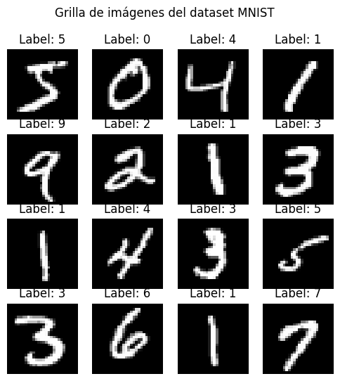
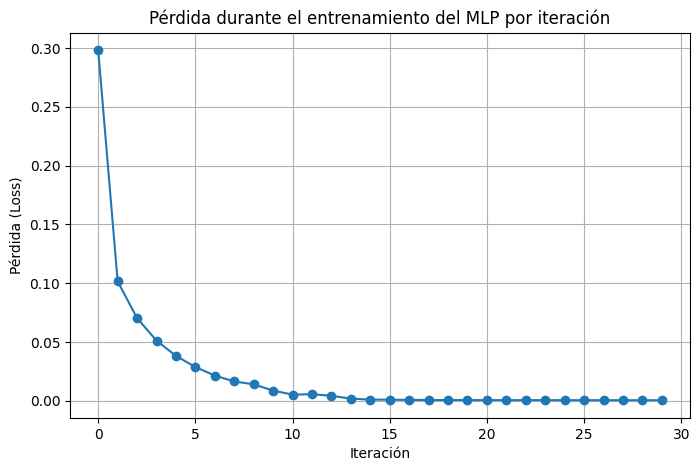
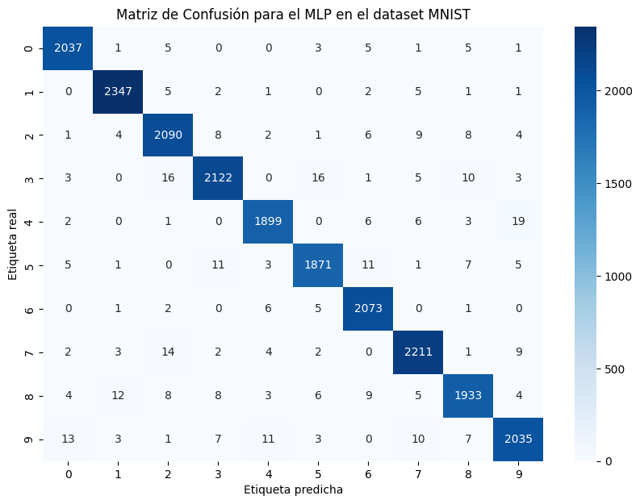
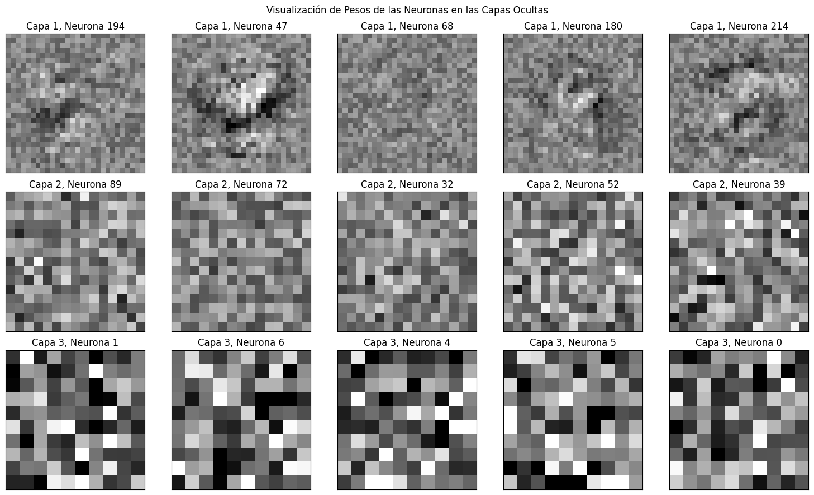
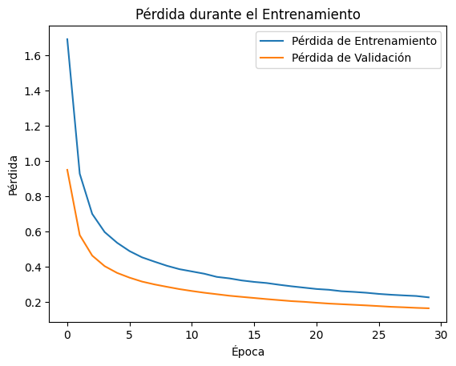
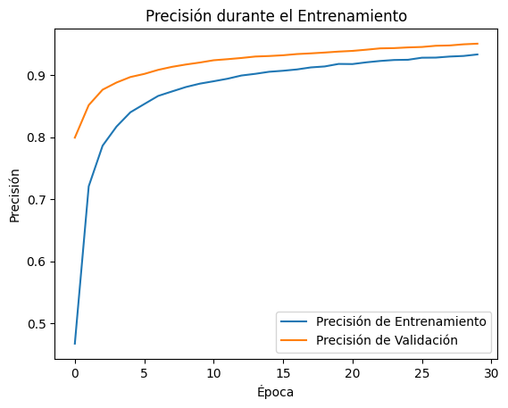

#@title Importar librerías
#importar librerías necesarias
import random
import numpy as np
import pandas as pd
from tqdm.notebook import tqdm
from matplotlib import pyplot as plt
from sklearn.model_selection import train_test_split
from sklearn.neural_network import MLPClassifier
from sklearn.datasets import fetch_openml
from sklearn.metrics import classification_report, confusion_matrix
import seaborn as sns
import random
import tensorflow as tf
import tensorflow.keras as keras
from tensorflow.keras.models import Sequential
from tensorflow.keras.layers import Dense, Dropout, Activation, Input
from tensorflow.keras.optimizers import SGD
from tensorflow.keras.utils import to_categorical
from tensorflow.keras.datasets import mnistImplementado un Perceptrón multi-capa usando frameworks

#@title Funciones complementarias
def plot_samples_dataset(X, y):
# Convertir las etiquetas a enteros
y = y.astype(int)
# Crear la grilla de 4x4
fig, axes = plt.subplots(4, 4, figsize=(6, 6))
fig.suptitle('Grilla de imágenes del dataset MNIST')
# Iterar para mostrar las primeras 16 imágenes con sus etiquetas
for i, ax in enumerate(axes.flat):
img = X.iloc[i].values.reshape(28, 28)
label = y[i]
ax.imshow(img, cmap='gray')
ax.set_title(f'Label: {label}')
ax.axis('off')
plt.show()
def plot_curva_aprendizaje(mlp):
plt.figure(figsize=(8, 5))
plt.plot(mlp.loss_curve_, marker='o')
plt.title('Pérdida durante el entrenamiento del MLP por iteración')
plt.xlabel('Iteración')
plt.ylabel('Pérdida (Loss)')
plt.grid()
plt.show()
def plot_matriz_confusion(cm):
# Visualizar la matriz de confusión usando Seaborn
plt.figure(figsize=(10, 7))
sns.heatmap(cm, annot=True, fmt='d', cmap='Blues', xticklabels=range(10), yticklabels=range(10))
plt.xlabel('Etiqueta predicha')
plt.ylabel('Etiqueta real')
plt.title('Matriz de Confusión para el MLP en el dataset MNIST')
plt.show()
def encontrar_dim_imagen(n_neurons):
"""
Encuentra la mejor forma cuadrada (filas, columnas) para una cantidad dada de neuronas.
"""
side_length = int(np.sqrt(n_neurons)) # Calcular la raíz cuadrada del número de neuronas
if side_length * side_length == n_neurons:
return (side_length, side_length) # Si es un cuadrado perfecto
else:
# Si no es un cuadrado perfecto, buscamos la mejor aproximación (filas, columnas)
for i in range(side_length, 0, -1):
if n_neurons % i == 0:
return (i, n_neurons // i) # Devolver filas y columnas
return (n_neurons, 1) # Si no encuentra, retornar en forma de vector (n_neurons, 1)
def visualizacion_pesos_mlp(mlp):
# Definir la figura con 3 filas y 5 columnas
fig, axes = plt.subplots(3, 5, figsize=(15, 9))
# Asignar las dimensiones para visualizar cada capa
layer_shapes = [encontrar_dim_imagen(layer.shape[0]) for layer in mlp.coefs_]
# Recorrer cada capa de coeficientes del MLP
for layer_index, (layer_coefs, ax_row) in enumerate(zip(mlp.coefs_, axes)):
# Seleccionar aleatoriamente 5 neuronas de la capa actual
num_neurons = layer_coefs.shape[1]
random_neurons = random.sample(range(num_neurons), 5)
# Obtener la forma de visualización para esta capa
layer_shape = layer_shapes[layer_index]
vmin, vmax = layer_coefs.min(), layer_coefs.max()
# Visualizar las neuronas seleccionadas
for neuron_index, ax in zip(random_neurons, ax_row):
# Seleccionar los pesos de la neurona específica y reestructurarlos en una matriz 2D
neuron_weights = layer_coefs[:, neuron_index].reshape(layer_shape)
# Dibujar la imagen de los pesos de la neurona
ax.matshow(neuron_weights, cmap=plt.cm.gray, vmin=0.5 * vmin, vmax=0.5 * vmax)
ax.set_xticks([])
ax.set_yticks([])
ax.set_title(f'Capa {layer_index+1}, Neurona {neuron_index}')
plt.suptitle('Visualización de Pesos de las Neuronas en las Capas Ocultas')
plt.tight_layout()
plt.show()
def plot_loss_historia_keras(history):
# Graficar el histórico de pérdida durante el entrenamiento
plt.plot(history.history['loss'], label='Pérdida de Entrenamiento')
plt.plot(history.history['val_loss'], label='Pérdida de Validación')
plt.title('Pérdida durante el Entrenamiento')
plt.xlabel('Época')
plt.ylabel('Pérdida')
plt.legend()
plt.show()
def plot_acc_historia_keras(history):
# Graficar la precisión durante el entrenamiento
plt.plot(history.history['accuracy'], label='Precisión de Entrenamiento')
plt.plot(history.history['val_accuracy'], label='Precisión de Validación')
plt.title('Precisión durante el Entrenamiento')
plt.xlabel('Época')
plt.ylabel('Precisión')
plt.legend()
plt.show()
def visualizacion_pesos_mlp_keras(model):
# Obtener los pesos del modelo (par de listas [pesos, biases] para cada capa)
weights = model.get_weights()
# Extraer solo los pesos de cada capa oculta, ignorando los bias
layer_weights = [weights[i] for i in range(0, len(weights), 2)] # Solo los pesos, no los sesgos
# Definir la figura con 3 filas (una por cada capa) y 5 columnas (5 neuronas al azar)
fig, axes = plt.subplots(len(layer_weights), 5, figsize=(15, 9))
# Calcular las formas de cada capa de manera dinámica
layer_shapes = [encontrar_dim_imagen(layer.shape[0]) for layer in layer_weights]
# Recorrer cada capa y sus pesos
for layer_index, (layer_coefs, ax_row) in enumerate(zip(layer_weights, axes)):
# Seleccionar aleatoriamente 5 neuronas de la capa actual
num_neurons = layer_coefs.shape[1]
random_neurons = random.sample(range(num_neurons), 5)
# Obtener la forma de visualización para esta capa
layer_shape = layer_shapes[layer_index]
vmin, vmax = layer_coefs.min(), layer_coefs.max()
# Visualizar las neuronas seleccionadas
for neuron_index, ax in zip(random_neurons, ax_row):
# Seleccionar los pesos de la neurona específica y reestructurarlos en una matriz 2D
neuron_weights = layer_coefs[:, neuron_index].reshape(layer_shape)
# Dibujar la imagen de los pesos de la neurona
ax.matshow(neuron_weights, cmap=plt.cm.gray, vmin=0.5 * vmin, vmax=0.5 * vmax)
ax.set_xticks([])
ax.set_yticks([])
ax.set_title(f'Capa {layer_index+1}, Neurona {neuron_index}')
plt.suptitle('Visualización de Pesos de las Neuronas en las Capas Ocultas de Keras')
plt.tight_layout()
plt.show()Dataset MNIST (Clasificación multiclase)
Trabajaremos con el clásico dataset de imágenes de digitos escritos a mano. Esta dataset puede ser descargado de diversas fuentes incluido sklearn.
# Cargar el dataset de MNIST
mnist = fetch_openml('mnist_784', version=1)
X, y = mnist['data'], mnist['target']# Visualizamos algunas imágenes
plot_samples_dataset(X, y)
Un breve vistazo del dataset nos indica que la mayoría de pixeles de la imágen estan en 0 y que los que tiene valor estan en 255. Esta escala, es los valores de intensidad en escala de grises. Además, vemos que la información esta organizada en un dataframe con 784 columnas lo que se traduce en una versión vectorizada de una imágen de 28x28 píxeles.
X.describe()| pixel1 | pixel2 | pixel3 | pixel4 | pixel5 | pixel6 | pixel7 | pixel8 | pixel9 | pixel10 | ... | pixel775 | pixel776 | pixel777 | pixel778 | pixel779 | pixel780 | pixel781 | pixel782 | pixel783 | pixel784 | |
|---|---|---|---|---|---|---|---|---|---|---|---|---|---|---|---|---|---|---|---|---|---|
| count | 70000.0 | 70000.0 | 70000.0 | 70000.0 | 70000.0 | 70000.0 | 70000.0 | 70000.0 | 70000.0 | 70000.0 | ... | 70000.000000 | 70000.000000 | 70000.000000 | 70000.000000 | 70000.000000 | 70000.000000 | 70000.0 | 70000.0 | 70000.0 | 70000.0 |
| mean | 0.0 | 0.0 | 0.0 | 0.0 | 0.0 | 0.0 | 0.0 | 0.0 | 0.0 | 0.0 | ... | 0.197414 | 0.099543 | 0.046629 | 0.016614 | 0.012957 | 0.001714 | 0.0 | 0.0 | 0.0 | 0.0 |
| std | 0.0 | 0.0 | 0.0 | 0.0 | 0.0 | 0.0 | 0.0 | 0.0 | 0.0 | 0.0 | ... | 5.991206 | 4.256304 | 2.783732 | 1.561822 | 1.553796 | 0.320889 | 0.0 | 0.0 | 0.0 | 0.0 |
| min | 0.0 | 0.0 | 0.0 | 0.0 | 0.0 | 0.0 | 0.0 | 0.0 | 0.0 | 0.0 | ... | 0.000000 | 0.000000 | 0.000000 | 0.000000 | 0.000000 | 0.000000 | 0.0 | 0.0 | 0.0 | 0.0 |
| 25% | 0.0 | 0.0 | 0.0 | 0.0 | 0.0 | 0.0 | 0.0 | 0.0 | 0.0 | 0.0 | ... | 0.000000 | 0.000000 | 0.000000 | 0.000000 | 0.000000 | 0.000000 | 0.0 | 0.0 | 0.0 | 0.0 |
| 50% | 0.0 | 0.0 | 0.0 | 0.0 | 0.0 | 0.0 | 0.0 | 0.0 | 0.0 | 0.0 | ... | 0.000000 | 0.000000 | 0.000000 | 0.000000 | 0.000000 | 0.000000 | 0.0 | 0.0 | 0.0 | 0.0 |
| 75% | 0.0 | 0.0 | 0.0 | 0.0 | 0.0 | 0.0 | 0.0 | 0.0 | 0.0 | 0.0 | ... | 0.000000 | 0.000000 | 0.000000 | 0.000000 | 0.000000 | 0.000000 | 0.0 | 0.0 | 0.0 | 0.0 |
| max | 0.0 | 0.0 | 0.0 | 0.0 | 0.0 | 0.0 | 0.0 | 0.0 | 0.0 | 0.0 | ... | 254.000000 | 254.000000 | 253.000000 | 253.000000 | 254.000000 | 62.000000 | 0.0 | 0.0 | 0.0 | 0.0 |
8 rows × 784 columns
Antes de hacer la división del conjunto de datos, podemos hacer una normalización de los valores de los píxeles para que esten entre 0-1, así es más fácil para la red optimizar la función de pérdida.
# Normalización
X = X / 255.# usar train test split para dividir los datos X y y
X_train, X_test, y_train, y_test = train_test_split(X, y,
test_size=0.30, random_state=42)
print('Dimensión X_train: {}'.format(X_train.shape))
print('Dimensión X_test: {}'.format(X_test.shape))Dimensión X_train: (49000, 784)
Dimensión X_test: (21000, 784)MLP clasificador multiclase en Sklearn
Seguidamente, vamos a crear un clasificador MLP usando la librería sklearn, pueden encontrar toda la documentación en: Documentación MLP.
mlp = MLPClassifier(hidden_layer_sizes=(225, 100), activation = 'relu',
max_iter=30, alpha=1e-4,
solver='sgd', verbose=10, random_state=1,
learning_rate = 'adaptive',
learning_rate_init = 0.1,
early_stopping=False, validation_fraction=0.2)
mlpMLPClassifier(hidden_layer_sizes=(225, 100), learning_rate='adaptive',
learning_rate_init=0.1, max_iter=30, random_state=1, solver='sgd',
validation_fraction=0.2, verbose=10)In a Jupyter environment, please rerun this cell to show the HTML representation or trust the notebook. On GitHub, the HTML representation is unable to render, please try loading this page with nbviewer.org.
MLPClassifier(hidden_layer_sizes=(225, 100), learning_rate='adaptive',
learning_rate_init=0.1, max_iter=30, random_state=1, solver='sgd',
validation_fraction=0.2, verbose=10)# Entrenar el clasificador MLP en los datos de entrenamiento
mlp.fit(X_train, y_train)Iteration 1, loss = 0.29809553
Iteration 2, loss = 0.10153217
Iteration 3, loss = 0.07025477
Iteration 4, loss = 0.05107289
Iteration 5, loss = 0.03813628
Iteration 6, loss = 0.02863240
Iteration 7, loss = 0.02136907
Iteration 8, loss = 0.01639116
Iteration 9, loss = 0.01391393
Iteration 10, loss = 0.00862180
Iteration 11, loss = 0.00514989
Iteration 12, loss = 0.00551735
Iteration 13, loss = 0.00416624
Iteration 14, loss = 0.00174071
Iteration 15, loss = 0.00094037
Iteration 16, loss = 0.00082533
Iteration 17, loss = 0.00067903
Iteration 18, loss = 0.00057994
Iteration 19, loss = 0.00053067
Iteration 20, loss = 0.00050842
Iteration 21, loss = 0.00048905
Iteration 22, loss = 0.00047281
Iteration 23, loss = 0.00045934
Iteration 24, loss = 0.00044890
Iteration 25, loss = 0.00043982
Iteration 26, loss = 0.00042988
Iteration 27, loss = 0.00042256
Iteration 28, loss = 0.00041607
Training loss did not improve more than tol=0.000100 for 10 consecutive epochs. Setting learning rate to 0.020000
Iteration 29, loss = 0.00040552
Iteration 30, loss = 0.00040366/usr/local/lib/python3.10/dist-packages/sklearn/neural_network/_multilayer_perceptron.py:690: ConvergenceWarning: Stochastic Optimizer: Maximum iterations (30) reached and the optimization hasn't converged yet.
warnings.warn(MLPClassifier(hidden_layer_sizes=(225, 100), learning_rate='adaptive',
learning_rate_init=0.1, max_iter=30, random_state=1, solver='sgd',
validation_fraction=0.2, verbose=10)In a Jupyter environment, please rerun this cell to show the HTML representation or trust the notebook. On GitHub, the HTML representation is unable to render, please try loading this page with nbviewer.org.
MLPClassifier(hidden_layer_sizes=(225, 100), learning_rate='adaptive',
learning_rate_init=0.1, max_iter=30, random_state=1, solver='sgd',
validation_fraction=0.2, verbose=10)# imprimir la curva de evolución de la pérdida
plot_curva_aprendizaje(mlp)
Evaluación completa
Realizaremos una evaluación completa revisando el rendimiento en ambos conjuntos, seguidamente generaremos el reporte de clasificación y la matriz de confusión.
print(f"Training set score: {mlp.score(X_train, y_train):.3f}")
print(f"Test set score: {mlp.score(X_test, y_test):.3f}")Training set score: 1.000
Test set score: 0.982# Realizar predicciones
y_pred = mlp.predict(X_test)
# Imprimir el reporte de métricas
print("Reporte de Clasificación del MLP en MNIST:\n")
print(classification_report(y_test, y_pred))
# Generar la matriz de confusión
cm = confusion_matrix(y_test, y_pred)
# visualizar la matriz de confusión
plot_matriz_confusion(cm)Reporte de Clasificación del MLP en MNIST:
precision recall f1-score support
0 0.99 0.99 0.99 2058
1 0.99 0.99 0.99 2364
2 0.98 0.98 0.98 2133
3 0.98 0.98 0.98 2176
4 0.98 0.98 0.98 1936
5 0.98 0.98 0.98 1915
6 0.98 0.99 0.99 2088
7 0.98 0.98 0.98 2248
8 0.98 0.97 0.97 1992
9 0.98 0.97 0.98 2090
accuracy 0.98 21000
macro avg 0.98 0.98 0.98 21000
weighted avg 0.98 0.98 0.98 21000

Visualización de pesos
# pesos de la primera capa oculta. Todas las neuronas conectadas con cada pixel
print('Dimensión de la primera capa oculta: {}'.format(mlp.coefs_[0].shape))
print('Dimensión de la segunda capa oculta: {}'.format(mlp.coefs_[1].shape))
print('Dimensión de la tercera capa oculta: {}'.format(mlp.coefs_[2].shape))Dimensión de la primera capa oculta: (784, 225)
Dimensión de la segunda capa oculta: (225, 100)
Dimensión de la tercera capa oculta: (100, 10)visualizacion_pesos_mlp(mlp)
Tutoriales relacionados
MLP Clasificador multiclase en keras
# Asumiendo que X_train y y_train ya están definidos como en el ejemplo anterior
# Preprocesar las etiquetas para que sean categóricas (one-hot encoding)
y_train_categorical = to_categorical(y_train)
y_train_categoricalarray([[1., 0., 0., ..., 0., 0., 0.],
[0., 0., 0., ..., 0., 0., 0.],
[0., 0., 0., ..., 0., 0., 0.],
...,
[0., 1., 0., ..., 0., 0., 0.],
[1., 0., 0., ..., 0., 0., 0.],
[1., 0., 0., ..., 0., 0., 0.]])# crear modelo usando el API secuencial
def MLPClassifier_keras():
# Definir el modelo similar al de sklearn
model = Sequential()
model.add(Input(shape=(784,)))
model.add(Dense(225, activation='relu')) # Primera capa con 225 neuronas
model.add(Dropout(0.3)) # Regularización con Dropout
model.add(Dense(100, activation='relu')) # Segunda capa con 100 neuronas
model.add(Dropout(0.3)) # Regularización con Dropout
model.add(Dense(10, activation='softmax')) # Capa de salida para 10 clases
return modelmlp_keras = MLPClassifier_keras()# Compilar el modelo
mlp_keras.compile(loss='categorical_crossentropy',
optimizer=SGD(),
metrics=['accuracy'])
# Entrenar el modelo
history = mlp_keras.fit(X_train.values.astype(float), y_train_categorical,
epochs=30,
batch_size=128,
validation_split=0.2,
verbose=1)Epoch 1/30 307/307 ━━━━━━━━━━━━━━━━━━━━ 4s 9ms/step - accuracy: 0.3342 - loss: 1.9841 - val_accuracy: 0.8077 - val_loss: 0.9699 Epoch 2/30 307/307 ━━━━━━━━━━━━━━━━━━━━ 4s 7ms/step - accuracy: 0.6913 - loss: 1.0380 - val_accuracy: 0.8551 - val_loss: 0.5885 Epoch 3/30 307/307 ━━━━━━━━━━━━━━━━━━━━ 3s 11ms/step - accuracy: 0.7718 - loss: 0.7515 - val_accuracy: 0.8785 - val_loss: 0.4627 Epoch 4/30 307/307 ━━━━━━━━━━━━━━━━━━━━ 6s 12ms/step - accuracy: 0.8130 - loss: 0.6290 - val_accuracy: 0.8920 - val_loss: 0.4014 Epoch 5/30 307/307 ━━━━━━━━━━━━━━━━━━━━ 4s 9ms/step - accuracy: 0.8357 - loss: 0.5519 - val_accuracy: 0.8982 - val_loss: 0.3635 Epoch 6/30 307/307 ━━━━━━━━━━━━━━━━━━━━ 5s 9ms/step - accuracy: 0.8546 - loss: 0.4972 - val_accuracy: 0.9065 - val_loss: 0.3365 Epoch 7/30 307/307 ━━━━━━━━━━━━━━━━━━━━ 7s 14ms/step - accuracy: 0.8667 - loss: 0.4594 - val_accuracy: 0.9094 - val_loss: 0.3168 Epoch 8/30 307/307 ━━━━━━━━━━━━━━━━━━━━ 5s 14ms/step - accuracy: 0.8735 - loss: 0.4353 - val_accuracy: 0.9150 - val_loss: 0.2990 Epoch 9/30 307/307 ━━━━━━━━━━━━━━━━━━━━ 5s 16ms/step - accuracy: 0.8825 - loss: 0.4075 - val_accuracy: 0.9180 - val_loss: 0.2858 Epoch 10/30 307/307 ━━━━━━━━━━━━━━━━━━━━ 6s 17ms/step - accuracy: 0.8854 - loss: 0.3878 - val_accuracy: 0.9207 - val_loss: 0.2740 Epoch 11/30 307/307 ━━━━━━━━━━━━━━━━━━━━ 8s 12ms/step - accuracy: 0.8908 - loss: 0.3752 - val_accuracy: 0.9227 - val_loss: 0.2636 Epoch 12/30 307/307 ━━━━━━━━━━━━━━━━━━━━ 5s 16ms/step - accuracy: 0.8954 - loss: 0.3598 - val_accuracy: 0.9255 - val_loss: 0.2542 Epoch 13/30 307/307 ━━━━━━━━━━━━━━━━━━━━ 4s 11ms/step - accuracy: 0.8971 - loss: 0.3484 - val_accuracy: 0.9279 - val_loss: 0.2464 Epoch 14/30 307/307 ━━━━━━━━━━━━━━━━━━━━ 4s 7ms/step - accuracy: 0.9029 - loss: 0.3325 - val_accuracy: 0.9301 - val_loss: 0.2393 Epoch 15/30 307/307 ━━━━━━━━━━━━━━━━━━━━ 4s 11ms/step - accuracy: 0.9027 - loss: 0.3320 - val_accuracy: 0.9319 - val_loss: 0.2320 Epoch 16/30 307/307 ━━━━━━━━━━━━━━━━━━━━ 2s 7ms/step - accuracy: 0.9089 - loss: 0.3172 - val_accuracy: 0.9336 - val_loss: 0.2250 Epoch 17/30 307/307 ━━━━━━━━━━━━━━━━━━━━ 2s 7ms/step - accuracy: 0.9076 - loss: 0.3140 - val_accuracy: 0.9344 - val_loss: 0.2197 Epoch 18/30 307/307 ━━━━━━━━━━━━━━━━━━━━ 2s 7ms/step - accuracy: 0.9118 - loss: 0.2950 - val_accuracy: 0.9359 - val_loss: 0.2132 Epoch 19/30 307/307 ━━━━━━━━━━━━━━━━━━━━ 3s 7ms/step - accuracy: 0.9152 - loss: 0.2916 - val_accuracy: 0.9379 - val_loss: 0.2088 Epoch 20/30 307/307 ━━━━━━━━━━━━━━━━━━━━ 5s 14ms/step - accuracy: 0.9183 - loss: 0.2808 - val_accuracy: 0.9389 - val_loss: 0.2035 Epoch 21/30 307/307 ━━━━━━━━━━━━━━━━━━━━ 4s 11ms/step - accuracy: 0.9180 - loss: 0.2786 - val_accuracy: 0.9398 - val_loss: 0.1995 Epoch 22/30 307/307 ━━━━━━━━━━━━━━━━━━━━ 3s 9ms/step - accuracy: 0.9216 - loss: 0.2649 - val_accuracy: 0.9411 - val_loss: 0.1945 Epoch 23/30 307/307 ━━━━━━━━━━━━━━━━━━━━ 6s 12ms/step - accuracy: 0.9221 - loss: 0.2633 - val_accuracy: 0.9428 - val_loss: 0.1900 Epoch 24/30 307/307 ━━━━━━━━━━━━━━━━━━━━ 5s 11ms/step - accuracy: 0.9262 - loss: 0.2557 - val_accuracy: 0.9436 - val_loss: 0.1873 Epoch 25/30 307/307 ━━━━━━━━━━━━━━━━━━━━ 4s 7ms/step - accuracy: 0.9251 - loss: 0.2540 - val_accuracy: 0.9453 - val_loss: 0.1830 Epoch 26/30 307/307 ━━━━━━━━━━━━━━━━━━━━ 3s 8ms/step - accuracy: 0.9252 - loss: 0.2495 - val_accuracy: 0.9456 - val_loss: 0.1791 Epoch 27/30 307/307 ━━━━━━━━━━━━━━━━━━━━ 5s 8ms/step - accuracy: 0.9285 - loss: 0.2474 - val_accuracy: 0.9465 - val_loss: 0.1762 Epoch 28/30 307/307 ━━━━━━━━━━━━━━━━━━━━ 3s 10ms/step - accuracy: 0.9305 - loss: 0.2405 - val_accuracy: 0.9474 - val_loss: 0.1733 Epoch 29/30 307/307 ━━━━━━━━━━━━━━━━━━━━ 7s 15ms/step - accuracy: 0.9309 - loss: 0.2373 - val_accuracy: 0.9472 - val_loss: 0.1713 Epoch 30/30 307/307 ━━━━━━━━━━━━━━━━━━━━ 4s 12ms/step - accuracy: 0.9323 - loss: 0.2320 - val_accuracy: 0.9484 - val_loss: 0.1689
plot_loss_historia_keras(history)
plot_acc_historia_keras(history)
Evaluación completa
y_test_categorical = to_categorical(y_test)
score = mlp_keras.evaluate(X_test.values.astype(float), y_test_categorical, batch_size=128)
score165/165 ━━━━━━━━━━━━━━━━━━━━ 1s 4ms/step - accuracy: 0.9481 - loss: 0.1761
[0.17650671303272247, 0.9479047656059265]# Realizar predicciones en el conjunto de prueba
y_pred = mlp_keras.predict(X_test.values.astype(float))
# Convertir las predicciones en etiquetas (la clase con mayor probabilidad)
y_pred_classes = np.argmax(y_pred, axis=1)
y_true = y_test.values.astype(int) # Las etiquetas reales del conjunto de prueba657/657 ━━━━━━━━━━━━━━━━━━━━ 4s 6ms/step
# Generar el reporte de clasificación
print("Reporte de Clasificación para el MLP en MNIST:\n")
print(classification_report(y_true, y_pred_classes))
# Crear la matriz de confusión
cm = confusion_matrix(y_true, y_pred_classes)
# Visualizar la matriz de confusión usando Seaborn
plot_matriz_confusion(cm)Reporte de Clasificación para el MLP en MNIST:
precision recall f1-score support
0 0.96 0.97 0.97 2058
1 0.96 0.98 0.97 2364
2 0.96 0.93 0.95 2133
3 0.93 0.93 0.93 2176
4 0.94 0.96 0.95 1936
5 0.95 0.93 0.94 1915
6 0.96 0.97 0.96 2088
7 0.95 0.95 0.95 2248
8 0.95 0.92 0.93 1992
9 0.93 0.93 0.93 2090
accuracy 0.95 21000
macro avg 0.95 0.95 0.95 21000
weighted avg 0.95 0.95 0.95 21000

Visualización de pesos
visualizacion_pesos_mlp_keras(mlp_keras)